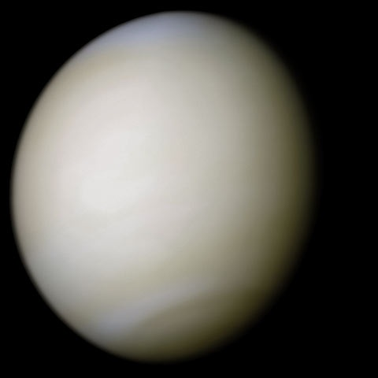

rocky planet
Venus
Earth's toxic twin - a scorching world with crushing atmospheric pressure.
Back to All Planets
Quick notes
Facts about Venus
- Venus is the hottest planet in our Solar System.
- It rotates clockwise, opposite to most planets.
- Its thick carbon dioxide atmosphere creates a runaway greenhouse effect.
Video